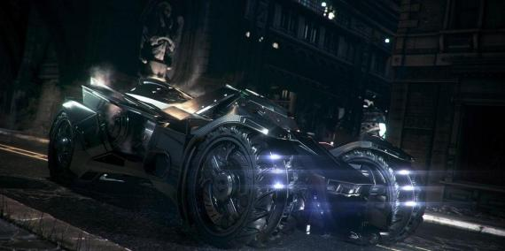
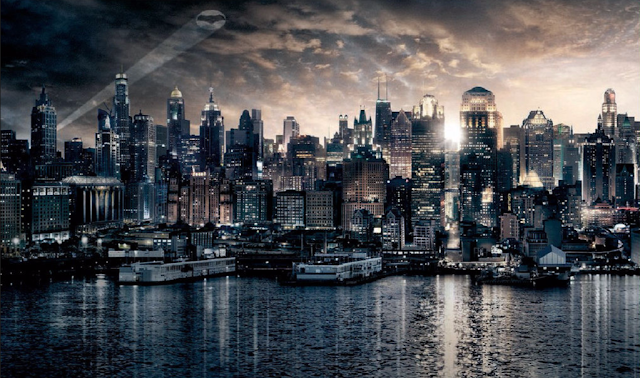
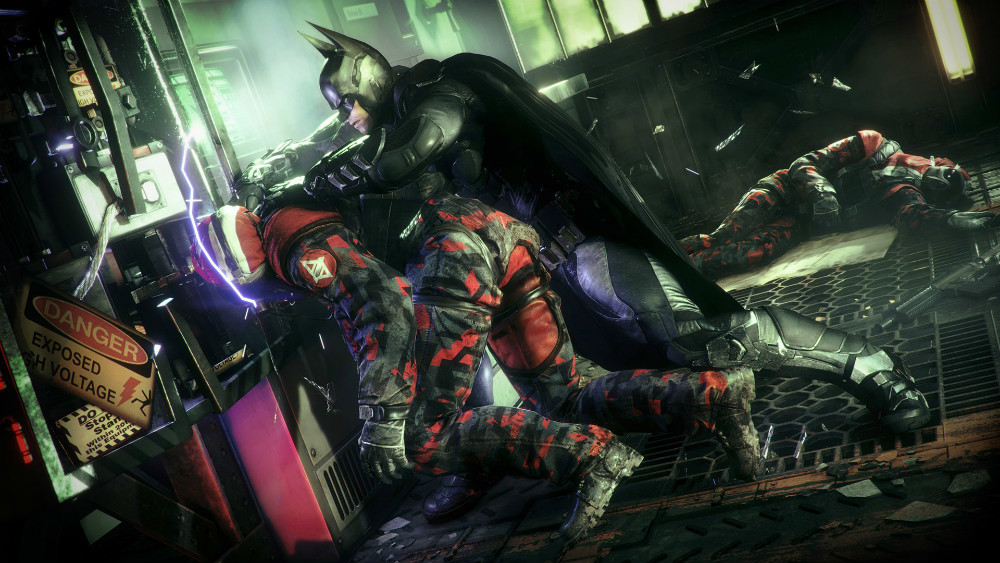

Batman: Arkham Knight es un videojuego de acción-aventura desarrollado por Rocksteady Studios y lanzado por Warner Bros. Interactive Entertainment
para las consolas PlayStation 4, Xbox One y Microsoft Windows, para SteamOS-Linux, Mac, entre otros.
Basado en el superhéroe de DC Comics Batman, es el sucesor del videojuego de 2013 Batman: Arkham Origins, y el cuarto juego principal en la serie Batman: Arkham. Kevin Conroy una vez más será la voz de Batman.
Fue lanzado a nivel mundial el 23 de junio de 2015.
El Batmóvil
Batimóvil creado por Rocksteady, que por primera vez puede controlar el jugador

Sin duda el batimovil, es una de las partes favoritas del
juego. Mientras eres adentrado en la historia debes cumplir
una serie de misiones para que la historia continue y tome
su rumbo hacia lo esperado.
La vista de la ciudad desde el batimovil da una experiencia sin duda extraordinaria, los efectos son asombrosos y la historia es sin duda muy envolvente.
GOTHAM

Todo comienza la noche en que se desató el caos en Gótica. El villano mejor conocido como "El Espantapájaros" lanzó un comunicado de
tener en su posesión una toxina capaz de volver a la gente tan desorientada y confundida que se someterán en sus propias pesadillas
en tiempo real y harán todo lo necesario por deshacerse de ellas. Lo que ellos ven será el miedo más profundo que los sofoca, cuando
la realidad es que se estarán matando unos a otros.
Está toxina será lanzada por toda la ciudad, si acaso llegará a ser expandida por más áreas siempre y cuando no se cumpla con los requisitos de entregarle
toda la ciudad al espantapájaros.
La ciudad fue evacuada de inmediato y por ende las calles se volvieron vulnerables para quienes se quedaron, oficiales que luchaban por el
control de la ciudad, todo el departamento policíaco contra no sólo los reclutas del espantapájaros sino también de diversos villanos que han destacado de mala forma en Gótica, entre ellos estaba el Pingüino, Dos Caras (Harvey Dent), El Acertijo, El doctor Pig, Deathstroke, y uno en particular que se ha aliado con el principal villano de esta historia; El Caballero de Arkham.
Todos unidos con un mismo propósito, destruir y adueñarse de Gótica. Haciendo todo lo posible pues han traído no sólo bandas de delincuentes,
han traído un ejército con equipamientos militares que se han atrincherado por toda la ciudad.
Esto es sólo una pequeña parte de lo que le espera al Caballero Nocturno, quien consiente de toda la situación es el
único que puede parar esto que se ve totalmente imposible.
A lo largo de la historia veremos como el personaje irá avanzando a su objetivo de limpiar la ciudad pero a un costo muy alto. Pues no está
de forma presencial su nemesis principal: El Joker.
Esto a raíz que El Joker había muerto, o eso se creía... Joker vive dentro de Batman,debido a que la sangre infectada de él se
introdujo en el cuerpo de Batman en el pasado antes de su deceso de su rival, es asi que Batman mientras lucha por controlar la ciudad,
al mismo tiempo lucha consigo mismo en una constante pelea de voluntades por no perder el control y dejar que la consciencia del Joker
que se anida en su interior tome el control completo de su ser y sea una amenaza mucho más peligrosa que toda la villania
junta que ataca a Gotham.
Algunas novedades del juego

Durante todo el desenlace, llueve en toda la ciudad, puede irse encontrando con varios conocidos en lo que
completa su mision principal. Atravesar la lluvia mientras caes en picado para coger impulso y elevarte con
la capa mientras el agua resbala por las alas del personaje es una experiencia orgásmica para aquellos que
busquen un acabado gráfico digno de esta generación, pero pulsar un botón y que Batman caiga sobre un Batmóvil
que ha llegado haciendo un trompo, para acto seguido poner el motor al máximo y ver cómo las paredes se destrozan
mientras los derrapes impactan contra el escenario, es la guinda de un pastel demencialmente bueno.
En el siguente video te dejo la primera parte de el primer capitulo de la saga del juego.
Arkham Knight es la conclusión de esta grandiosa trilogía de Arkham y su desarrollo de la historia
es completamente enigmática y asombrosa por la forma en que se desenvuelve cada villano y cada momento de la historia.
Este es una reseña del juego de arkham knigt.
Programacion WEB, proyecto.
fuente: VIDA EXTRA, analisis e imagenes.

{kind=link}